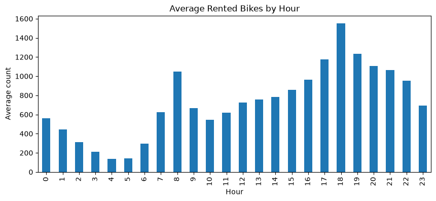
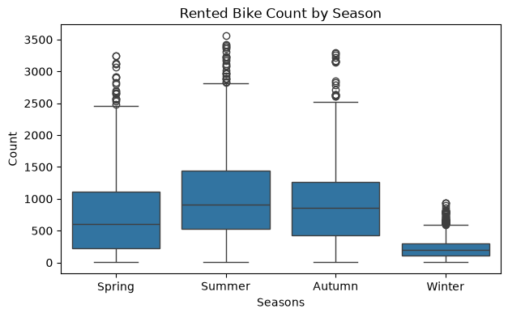
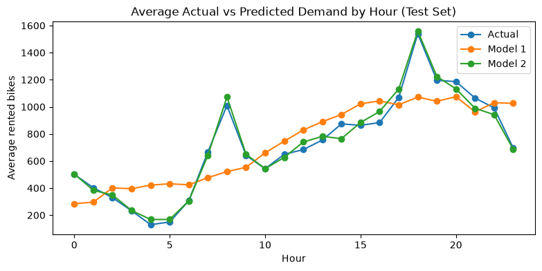
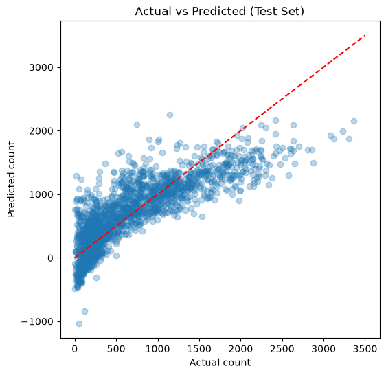

Forecasting bike-share demand in Seoul
How many bikes will people rent this hour? I built a linear regression model on two years of Seoul's public bike-share data and turned the results into operating recommendations for a bike-share operator.
Demand is highly predictable from time of day, temperature, season and rain — good enough to plan bike redistribution and maintenance, but not to promise exact hourly numbers.
- The model explains about two-thirds of the variation in hourly rentals (test R² 0.664).
- Demand peaks at 8am and 6pm; the evening peak is roughly 11× busier than the 4–5am low.
- Winter demand is about a quarter of summer's; every mm of rain costs about 65 rentals an hour.
- Recommendation: schedule redistribution and maintenance around these patterns, and use the model for shift-level planning with a safety buffer at peak times.
What the data says
8,760 hourly records → 8,465 after cleaning · target: bikes rented per hour
Data & preparation
- Source: Seoul Bike Sharing Demand (UCI), hourly city-wide rentals with weather, season and holiday data.
- Removed 295 hours when the system wasn't operating (rentals were always zero, so they would distort the model).
- Dropped Dew Point: it was 0.91 correlated with Temperature, which would make the coefficients unreliable.


Modelling approach
Because demand rises and falls twice a day, a straight line across the hours can't capture it. I compared two linear regression models with 5-fold cross-validation:
| Model | How “hour” is used | Mean CV R² |
|---|---|---|
| Model 1 | As a number (0–23) | 0.536 |
| Model 2 ✓ | As 24 categories (one-hot encoded) | 0.655 |
Model 2 was chosen. On the held-out 20% test set it scored R² 0.664, very close to its cross-validation score, so it isn't overfitting.

Key drivers (holding other factors constant)
| Factor | Effect on rentals per hour |
|---|---|
| Temperature | +24 per °C |
| Rainfall | −65 per mm |
| Humidity | −7 per % point |
| Working day vs holiday | +124 |
| Winter vs autumn | −357 |
| Spring / summer vs autumn | ≈ −157 |
How accurate is it?
Typical error (RMSE) is 363 bikes per hour — about half of the average hourly demand of 720. Predictions are reasonable for low and medium demand, but the model underestimates the busiest hours, and 145 of 1,693 test predictions were negative, which is impossible for a count.

What the operator should do
Turning the findings into decisions for a bike-share operator
Redistribute bikes before the commuter peaks
Move bikes to commuter areas before 7–8am and 5–6pm, when demand jumps. Use the 4–5am low for overnight rebalancing, when almost no one is riding.
Evidence: average demand peaks at about 1,554 bikes/hour at 6pm and falls to about 140 at 4–5am.
Plan the fleet and maintenance by season
Schedule major servicing, repairs and bike replacement in winter, and make sure the full fleet is available from spring to autumn.
Evidence: median hourly demand is about 203 in winter vs about 906 in summer and 856 in autumn.
Adjust daily staffing to the weather forecast
Feed tomorrow's forecast into the model to plan how many redistribution staff and vans are needed. Scale down on rainy or cold days; scale up on warm, dry ones.
Evidence: each mm of rain removes about 65 rentals an hour; each extra °C adds about 24.
Run lighter operations on public holidays
Holidays lose much of the commuting demand, so fewer rebalancing runs are needed.
Evidence: working days have about 124 more rentals per hour than holidays.
How to use the model safely
- Use it for daily and shift-level planning, not exact hourly targets (error ≈ half of average demand).
- Add a safety buffer at peak times, since busy hours are underestimated.
- Treat any negative prediction as zero.
Next steps to improve it
- Try a log-transformed target or a non-linear model such as a random forest to handle the busiest hours.
- The data is city-wide; station-level data would be needed to decide where to move bikes.
All figures come from my analysis of the UCI Seoul Bike Sharing Demand dataset. “≈11×” is 1,554 ÷ 140; “a quarter” compares the winter and summer medians (203 vs 906).